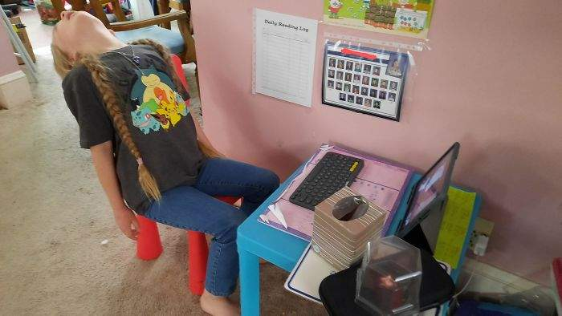

Почему дистанционное обучение?

Дистанционное обучение (ДО) — образовательный процесс с применением технологий, обеспечивающих связь обучающихся и преподавателей на расстоянии, без непосредственного контакта
Дистанционное обучение — взаимодействие учителя и учащихся между собой на расстоянии, отражающее все присущие учебному процессу компоненты (цели, содержание, методы, организационные формы, средства обучения) и реализуемое специфичными средствами Интернет-технологий или другими средствами, предусматривающими интерактивность.
Дистанционное обучение ПЛЮСЫ:
- Предлагает мобильность
Общение с преподавателями осуществляется по-разному, как онлайн, так и офлайн. Консультации с преподавателем по электронной почте иногда эффективнее и быстрее, чем планирование личной встречи.
- Обучение на рабочем месте
Возможно обучение на нескольких курсах одновременно, чтобы получить следующий более высокий разряд. Для этого не нужно брать отпуск на основном месте работы или ездить в командировки. Существуют образовательные организации, которые проводят корпоративное обучение (повышение квалификации) работников предприятий и государственных служащих. В этом случае образование не прерывает стаж работы, и изученные навыки могут быть немедленно применены к трудовой жизни.
- У вас есть возможность учиться по собственному желанию
Студентам не нужно беспокоиться, что они отстанут от своих однокурсников. Вы всегда можете вернуться к изучению сложных вопросов, посмотреть видеолекции несколько раз, прочитать переписку с учителем и пропустить уже выученные темы. Главное – успешно сдать промежуточные и итоговые экзамены.
- У вас есть возможность учиться в любое время
Студент, обучающийся дистанционно, может решить, когда и сколько времени посвятить в течение семестра изучению материала. Он составляют индивидуальный график обучения для себя. Некоторые учебные заведения предоставляют своим студентам возможность отложить и вернуться к учебе без необходимости повторной оплаты за обучение.